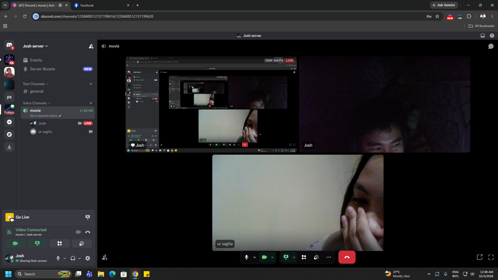
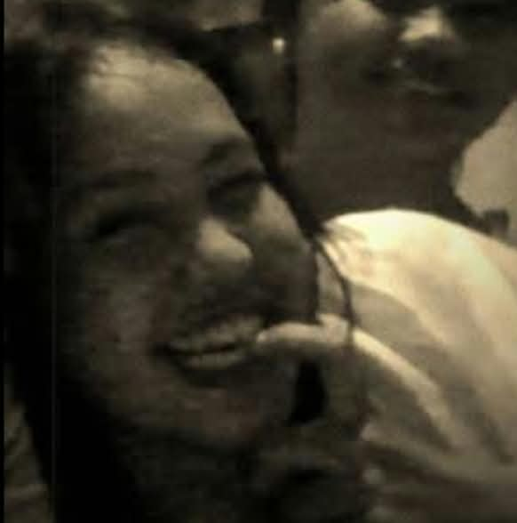
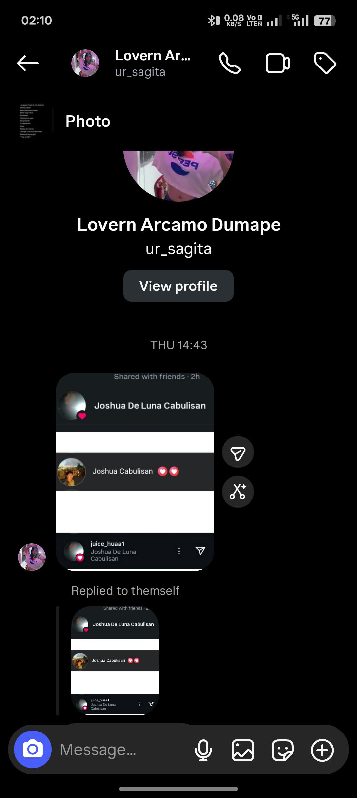
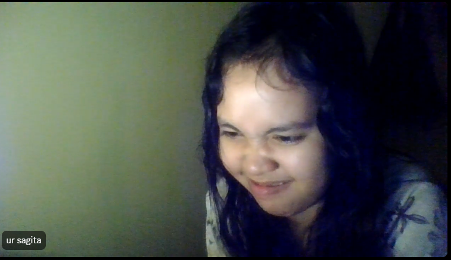
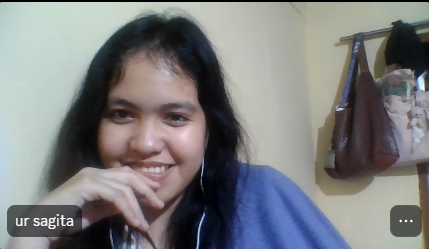
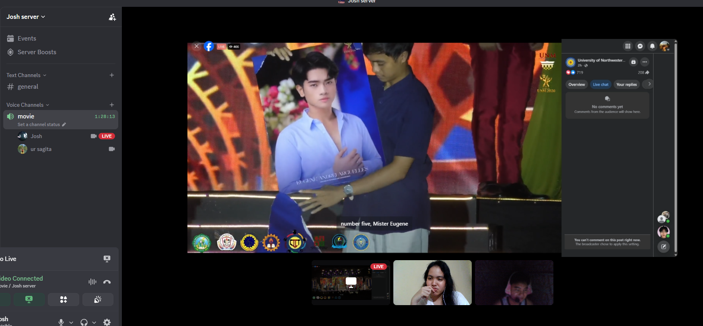

First DC
Every conversation with you feels special ☕🤍a little something made for you
A Little World for
Hey, you. I made something special for you.
It's just a little piece of what I've been wanting to say. ♡
You're special.
Always, Chotiee ♡
little moments worth keeping
Some of my favorite moments with you ♡

First DC
Every conversation with you feels special ☕🤍
My Fav Smile of yours
cute kaayo imong smile
Compilation
One of those little moments worth remembering 🌷
Chotieee
🌷✨
A little happiness
Your smile makes ordinary moments special ♡
Watching with you
Hopefully, many more moments with you 🌆The little things can mean a lot. ♡
Happy birthday to a genuinely good person who continues to inspire me in so many ways. Continue to bring happiness to the people around you, and never lose the genuine heart that makes you special. I hope you continue smiling and appreciating the little moments that make life beautiful. Be happy always, and never forget that you deserve the same happiness that you give to other people.
I hope this new chapter of your life brings you more reasons to smile, more memories to treasure, and more opportunities to do the things that make you happy. I hope you achieve the goals you've been working for, even the ones you don't always talk about. May you have the strength to face the hard days and the courage to keep going whenever things don't go as planned.
Always remember that it's okay to rest when you're tired, to take your time when things feel difficult, and to choose yourself when you need it. You don't have to be okay all the time, and you don't have to figure everything out at once. Life can be tiring sometimes, but I hope you never forget how far you've come and how much more you can still experience.
I hope you continue to meet people who appreciate you for who you are, people who make you feel comfortable, understood, and valued. You deserve genuine happiness, peaceful days, and moments that make you feel grateful to be where you are. And even on days when you don't feel your best, I hope you remember that there are still so many beautiful things waiting for you.
I'm really glad I got the chance to know you, even if we're still getting to know each other. You're someone I'm happy to have met, and I'm looking forward to knowing more about you and the person you continue to become. I hope life gives you more reasons to laugh, more beautiful memories to look back on, and more people who make your days a little brighter.
So, enjoy your special day, Lovern! Eat lots of good food, laugh as much as you want, take lots of pictures, and make memories you'll look back on with a smile. Don't forget to appreciate yourself, too, because you deserve to celebrate the person you are and everything you've become.
Happy birthday once again, Loverr! 🥹🤍 Always take care of yourself, keep that beautiful smile, and continue being the genuine person that you are. I hope this year will be kind to you and bring you the happiness, peace, and love you deserve. And whatever happens, I hope you always find a reason to smile, even in the simplest things.
Be happy always, Lovern. You deserve so many good things in life. 🌷🤍
a letter from me to you
A few things I want you to know
Hi Lovern,
I don't know where this will lead us, but I'm really happy I got the chance to know you.
I like how our conversations can be funny, random, and comfortable. You have a way of making even simple talks feel special, and I enjoy learning more about the kind of person you are.
I don't expect everything to happen quickly. I just want to keep getting to know you, share more little moments, and show you through my actions that I genuinely appreciate you.
Thank you for being someone I'm glad I met. Whatever happens, I hope this little website makes you smile. You deserve kindness, respect, and happiness.
Sincerely,
Joshua ♡
one hundred little things
Tap a card to reveal a reason ♡
These are a starting point—edit them so every reason feels true to what you've noticed about her.
if we get the chance
A little bucket list for us ♡
little notes for different days
Choose a letter for the moment you're having ♡
A little note
from the first hello to whatever comes next
Update these moments with your real story ♡
You chat why im reacting all you posted/day/notes.
Learning little things about each other, one conversation at a time.
A small way to show that getting to know you means something to me.
No rush. Just room for more memories, if you want that too. ♡
something i've been wanting to ask
No pressure—just honesty ♡
Hi, Lovern.🤍🌹
If your answer is yes, you can click the button. But you don't need to answer right away, po. Take your time. I'll respect whatever you feel, and I'm willing to wait.
My intentions for you are pure and sincere. I'm not a perfect person. I make mistakes, I overthink sometimes, and I still have a lot to learn, but I'll do my best to be honest with you and show you how much I care.
I may not be the best person you've ever met, but I want you to know that my feelings for you are genuine. I'm not courting you just because I like you. I'm doing this because I admire the person you are, your values, and the way you carry yourself.
For me, love is not just about butterflies or kilig moments. It's also about respect, understanding, patience, and supporting each other as we grow. I want to get to know you more and show you through my actions that my intentions are real.
I don't want to rush anything, po. I just want to get to know you more, make you feel appreciated, and show you that my intentions are genuine.
I like the person I'm getting to know, and I'd love the chance to know you more deeply, at a pace that feels comfortable for you.
And even if things don't turn out the way I hope, that won't change the fact that I genuinely admire you. I don't want you to feel that you owe me anything just because I have feelings for you. Your happiness and comfort matter to me, too.
So, take your time, po. There's no need to rush. Whatever your answer may be, I'm thankful that I got the chance to know someone like you.
So, if you're comfortable with it, can I court you? 🥹🤍🌹
Either answer is okay. I want you to feel comfortable being honest.
Thank you, Lovern
You made me curious to know more, happy to keep talking, and inspired to make this little corner of the internet.
I don't know what the future holds, but I'm glad our paths crossed.
Always, Joshua ♡